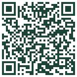
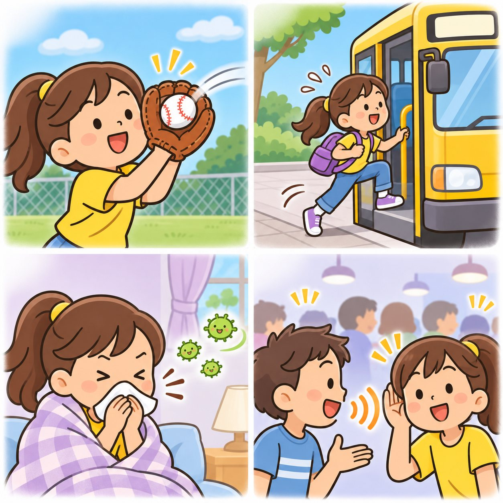
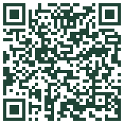

- 1FIRST TRY
- 2WORD PICTURE
- 3READING
- 4강의
- 5MAKE IT MINE

오른쪽 쪽은 가리고 먼저 해 봐요.
A이 문장, 무슨 뜻?
시끄러운 교실에서 친구가 무슨 말을 했는데, 내가 이렇게 대답했어요.
Sorry, I didn’t catch that.
여기서 catch는 무슨 뜻일까요? 짐작해서 써 봐요.
B내가 아는 뜻아는 뜻을 모두 써요
catch =
아래 단어는 catch와 뜻이 비슷할까요, 반대일까요? 괄호에 유(유의어) 또는 반(반의어)을 짐작해 써요.
- grab()
- take()
- miss()
- throw()
C영어로 써 보기catch를 꼭 넣어요 · 힌트는 문장 순서대로, 동사는 기본형
- 1지호는 한 손으로 공을 잡았다.Jiho · the ball · with one hand
- 2우리는 8시 버스를 탔다.we · the 8 o’clock bus
- 3나는 지난주에 감기에 걸렸다.I · a cold · last week
- 4미안, 네 이름을 못 알아들었어.sorry · I didn’t · your name
도움말‘~했다’는 caught로 써요. 못 했으면 didn’t catch.
catch 뒤에 무엇이 오나 봐요
- ①ball · fish · butterfly
- ②bus · train · plane
- ③cold · flu
- ④name · question · answer

단어 · 예문 듣기
채점한 뒤 듣고 따라 읽어요
핵심 그림움직이는 것을 놓치지 않고 붙잡아요

1234공, 버스, 감기, 말 — 모두 ‘움직이는 것’이에요. 날아오고, 떠나고, 옮아오고, 흘러가 버리는 것을 딱 붙잡는 순간이 catch예요.
In Englishcatch = to get and hold something that is moving
여러 가지 뜻문장에 맞게 뜻을 짐작해 써요
- 1
The dog caught the ball in its mouth.
개가 입으로 공을 .
- 2
We ran to catch the train.
우리는 기차를 위해 뛰었다.
- 3
Many children catch colds in winter.
겨울에는 많은 아이들이 감기에 .
- 4
I didn’t catch the teacher’s question.
나는 선생님의 질문을 못했다.
유의어 · 반의어B에서 짐작한 것과 맞나요? · catch와 다른 점을 봐요
| 유의어grab | She grabbed my hand and ran.그녀는 내 손을 확 붙잡고 달렸다.grab은 가만히 있는 것도 ‘확’ 움켜잡아요. catch는 움직이는 것을 붙잡아요. |
| 유의어take | Let’s take the bus to the zoo.동물원까지 버스를 타고 가자.take는 그냥 ‘타고 가다’. catch는 떠나기 전에 놓치지 않고 잡아타는 느낌이에요. |
| 반의어miss | I missed the bus by one minute.나는 1분 차이로 버스를 놓쳤다.공도, 버스도, 말도 붙잡지 못하면 모두 miss — catch의 여러 가지 뜻 거의 모두와 반대예요. |
| 반의어throw | Throw the ball to me!나에게 공을 던져!throw는 손에서 내보내고, catch는 손으로 받아요. 공놀이의 짝꿍이에요. |
글 속 □에 알맞은 번호를 써요
- ①(움직이는 것을) 잡다 · 받다
- ②(떠나려는 탈것을) 타다
- ③(병에) 걸리다
- ④(말을) 알아듣다

본문 듣기
듣고 따라 읽어요
A Busy Saturday바빴던 토요일
On Saturday morning, Minji had a baseball game. She ran out of the house and caught the bus just in time. “Phew! I almost (a) it,” she said.
At the park, her friend Tom threw the ball high into the sky. Minji looked up, opened her glove, and caught it. Everyone cheered.
After the game, the team went to a noisy restaurant. Tom said something, but Minji didn’t catch it. “Sorry, what did you say?” she asked. “You were great today!” Tom shouted.
That night, Minji started to cough. Her nose was runny, too. “Oh no, I think I caught a cold,” she said. Her mom gave her some warm tea. “Go to bed early. You need a good (b),” Mom said. Minji smiled. “It was a busy day, but a great day.”
| glove | noun | a thing you wear on your hand to catch a ball | 글러브 |
| cheer | verb | to shout because you are happy | 환호하다 |
| noisy | adj. | full of loud sounds | 시끄러운 |
| shout | verb | to say something very loudly | 소리치다 |
| cough | verb | to push air out of your throat with a sudden loud sound | 기침하다 |
| runny | adj. | with water coming out of the nose | (콧물이) 흐르는 |
1밑줄 친 catch 뒤 □에 뜻 번호(①~④)를 써요. 4곳
2빈칸 (a) (b)에 알맞은 한 단어를 바로 쓰고, 근거가 된 말에 동그라미 해요.
3처음 보는 뜻 도전 배우지 않은 뜻이에요. 핵심 그림으로 짐작해 써요.
The dry leaves caught fire.마른 나뭇잎에 불이 .
강의 보기
①~③을 마친 뒤에
- catch up with ~를 따라잡다앞서 가는 사람을 붙잡을 만큼 쫓아가요Run faster! Let’s catch up with Mina.더 빨리 뛰어! 미나를 따라잡자.
- catch your breath 숨을 돌리다달아난 숨을 다시 붙잡아요Let’s stop here and catch our breath.여기서 멈추고 숨 좀 돌리자.
1영어로 쓰기힌트는 문장 순서대로, 동사는 기본형 — 오늘의 단어를 넣고 동사 모양을 바꿔요
- 1아빠가 떨어지는 컵을 받아 냈다.Dad · the falling cup
- 2서두르면 우리는 막차를 탈 수 있어.if · we · hurry · we · can · the last train
- 3내 동생은 나한테서 감기가 옮았다.my little brother · a cold · from me
- 4나는 그 노래 제목을 잘 못 들었어.I didn’t · the name · of the song
2알맞은 단어 넣기다섯 단어를 한 번씩만 써요. 모양을 바꿔도 돼요.
catchgrabtakemissthrow
- 1Throw the ball, and I’ll it!
- 2He his coat and ran out the door.
- 3Let’s the subway. It’s faster than the bus.
- 4I got up late and the school bus.
- 5Don’t stones at the birds!
3해석 바르게 고치기catch를 ‘잡다’로만 읽은 해석이에요. 문장에 맞게 고쳐 써요.
- 1We caught the last bus.우리는 마지막 버스를 잡았다.→
- 2Wear a coat, or you’ll catch a cold.코트를 입어, 안 그러면 감기를 잡을 거야.→
- 3Sorry, I didn’t catch what you said.미안, 네가 한 말을 안 잡았어.→
4영영 뜻으로 떠올리기p.10 아래 표는 보지 말고 써요
- a thing you wear on your hand to catch a ballg _ _ _ _
- to shout because you are happyc _ _ _ _
- full of loud soundsn _ _ _ _
- to say something very loudlys _ _ _ _
- to push air out of your throat with a sudden loud soundc _ _ _ _
- with water coming out of the noser _ _ _ _